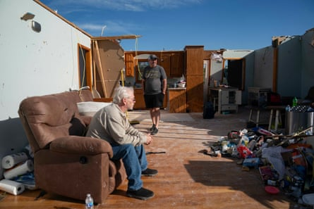
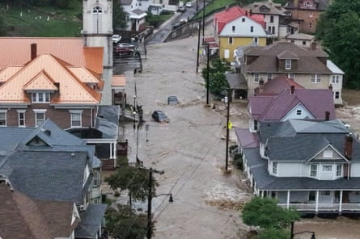
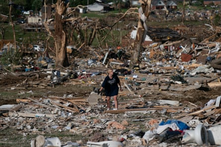

A brutal stretch of severe weather has taxed communities on the eastern fringes of tornado alley this spring and early summer, while harsh staffing cuts and budget restrictions have forced federal meteorologists to attempt to forecast the carnage with less data.
As of 30 June, there have already been more than 1,200 tornadoes nationwide.
More than 60 people have died due to this year’s tornadoes, most of which have centered on the Mississippi River valley – about 500 miles east of the traditional heart of “tornado alley” of Kansas, Oklahoma and Texas. That unusual eastward shift may also be making tornado outbreaks more dangerous, bringing them in closer proximity to more people than the relatively sparsely populated plains states.
In addition to the tornadoes, it’s also been a burdensome year for flash flooding.
On 14 June, more than three inches of rain fell in just half an hour in West Virginia, washing away a young boy and prompting frantic emergency rescues across two counties in the northern part of the state. According to National Weather Service statistics , rainfall that intense could only be expected to happen about once every thousand years in a stable climate.
As the weather has worsened, there have been fewer federal scientists to alert the public of it.
A man stands in the remnants of his home in London, Kentucky, on 17 May 2025.Photograph: Allison Joyce/AFP via Getty Images
Cuts to the weather service by Trump and the so-called “department of government efficiency” (Doge) have left NWS local forecast offices critically understaffed throughout this year’s heightened severe weather. In April, an internal document reportedly described how cuts could create a situation of “ degraded” operations – shutting down core services one by one until it reaches an equilibrium that doesn’t overtax its remaining employees.
The changing climate is also making simultaneous weather disasters more likely, such as overlapping tornadoes and flash floods – creating emergency preparedness difficulties and compounding the effects of funding cuts.
Deadly storms earlier this spring in Kentucky and Missouri featured torrential rains during an ongoing tornado outbreak, a nightmare scenario that demands close attention by emergency managers to avoid people seeking shelter in flood zones. At the NWS office in Jackson, Kentucky , however, a staffing shortage meant there was no on-duty forecaster for the overnight shift when the storms were at their peak. This year marks the first time that local NWS forecast offices have stopped round-the-clock operations in the agency’s modern history.
Now, additional meteorologists are being remanded from research roles – where they’d normally be working to improve techniques and make advances for future years – into the forecasting frontlines in an attempt to fill the staffing gaps.
“The world’s example for weather services is being destroyed,” wrote Chris Vagasky, a meteorologist at the University of Wisconsin, on social media earlier this spring after a round of major changes were announced.
In May, the main computer system that distributes NWS weather alerts to local partners for emergency broadcast suffered a lengthy outage . By the time the system was back online hours later, at least one flash flood warning , near Albuquerque, New Mexico and at least one tornado warning , near Columbia, South Carolina, never made it to the public.
The decision to collect a bedrock source of data for forecasters – weather balloons – has been deferred to local offices, essentially making twice-daily launches optional for understaffed forecast centers.
In June, offices that missed balloon launches serve New York City, Atlanta, Portland, and more than 10 sites in the midwest. Of the 91 launch sites, just over 70 sites were consistently launching balloons during peak tornado season in May – a loss of one-quarter of this critical data source.
Flood waters in downtown Westernport, Maryland, on 13 May 2025.Photograph: Ricky Carioti/The Washington Post via Getty Images
First used in 1896, weather balloon launches are still the single-most important type of data that meteorologists use. Weather balloons are the only way meteorologists have of taking direct measurements of air pressure, winds, temperature, and humidity throughout the atmosphere simultaneously at about 1,000 locations across the world – this data forms the basis for all computer-derived weather forecasts that appear on weather apps.
Since upper atmospheric winds generally blow from west to east in the US, the persistent data loss has tended to affect weather forecasts in the eastern half of the country the most – exactly where tornadoes are happening more frequently.
The entire process to launch a weather balloon takes a NWS employee about three hours . Since the balloon launches are time-consuming and difficult to automate, they’re being phased out at NWS offices with staffing shortages – even though they collect essential data.
“At the expense of weather balloons, we would rather focus our energy on looking at other data that will allow us to be able to give you the advance prediction that a tornado will occur,” Suzanne Fortin, meteorologist in charge at the Omaha NWS said in a March press conference shortly after the cuts were announced. “That’s the reason we’re suspending, so we can focus on those life-saving warnings that can keep people safe.”
In May, every living former director of the NWS signed on to an open letter with a warning that, if continued, Trump’s cuts to federal weather forecasting would create “needless loss of life”.
Despite bipartisan congressional pushback for a restoration in staffing and funding to the NWS, sharp budget cuts remain on pace in projections for the 2026 budget for the National Oceanic and Atmospheric Administration, the parent organization of the NWS. On Monday, in its annual budget request to Congress, Noaa proposed a slight budget increase for the NWS for fiscal year 2026 while maintaining deep cuts to its research budget that provides tools to forecasters.
“Noaa leadership is taking steps to address those who took a voluntary early retirement option,” Erica Grow Cei, an NWS spokesperson, said in a statement to the Guardian when asked about staffing.
“NWS continues to conduct short-term Temporary Duty assignments (TDYs), and is in the process of conducting a series of Reassignment Opportunity Notices (RONs) to fill roles at NWS field locations with the greatest operational need.
“Additionally, a targeted number of permanent, mission-critical field positions will soon be advertised under an exception to the Department-wide hiring freeze to further stabilize frontline operations.”
In a 5 June hearing on Capitol Hill, commerce secretary Howard Lutnick , whose role includes overseeing Noaa, and by extension the NWS, defended the administration’s approach claiming agencies were “full staffed” and were “transforming how we track storms and forecast weather with cutting-edge technology”.
“Under no circumstances am I going to let public safety or public forecasting be touched,” he said.
. Studies over the past decade have shown that global heating may be acting to both intensify tornado outbreaks and shift the tornado season eastward and earlier in the year. Warmer air can also hold more water vapor, making extreme rains even more intense.
A volunteer sorts through the debris of a home after a tornado in London, Kentucky, on 18 May 2025.Photograph: Allison Joyce/EPA
Five of the past six seasons have had a higher-than-average death toll. This year’s tornado season is the second-busiest on record, and last year’s was the third-busiest.
Weather experts generally agree that this surge in tornado activity is due in part to unusually warm temperatures over the Gulf of Mexico that have helped supply the eastern US with the necessary ingredients for tornado formation. At the same time, new studies suggest that unusual summertime warming is concentrating activity into fewer days.
The NWS anticipated some of these changes and had been planning to consolidate and modernize its forecast systems to be more responsive to complex weather emergencies. But what was supposed to be a multi-year transition to a “mutual aid” concept has instead taken place haphazardly over the past several weeks.
According to climate scientists and public safety experts, all of this adds up to more deaths in disasters. As peak hurricane season approaches , this is a big concern.
Eric Holthaus is a meteorologist and climate journalist based in Minnesota